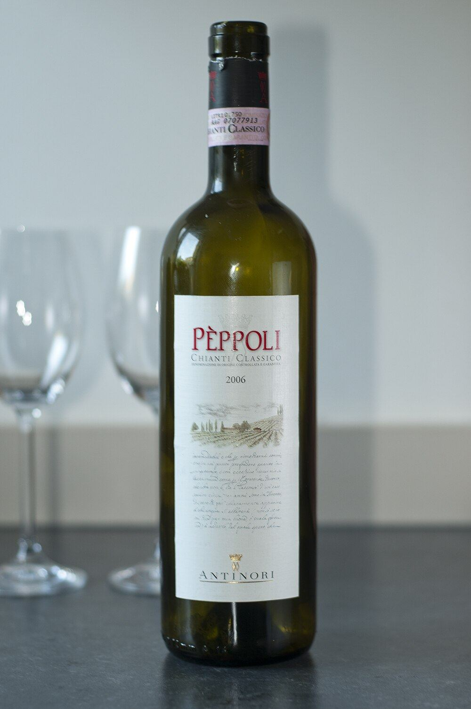

ROSSO
Il Chianti Classico è la zona storica del Chianti, tra Firenze e Siena, e il suo vino si produce con almeno l'80% di Sangiovese. Il suo simbolo è il gallo nero ed è DOCG autonoma dal 1996.

Nel Medioevo il territorio del Chianti, tra Firenze e Siena, era organizzato nella Lega del Chianti, il cui emblema era un gallo nero. Nel 1716 il bando del granduca Cosimo III de' Medici delimitò la zona di produzione del vino del Chianti, che corrisponde in gran parte all'attuale zona classica. Nell'Ottocento Bettino Ricasoli, dal castello di Brolio, propose una formula basata sul Sangiovese con aggiunte di Canaiolo e Malvasia. Con il successo del vino, il nome Chianti si estese a un territorio molto più ampio e nel 1924 i produttori della zona storica fondarono un consorzio per tutelarla. Il Chianti Classico ottenne la DOCG nel 1984, ancora come parte del Chianti, e nel 1996 divenne una DOCG autonoma.
La denominazione comprende interamente i comuni di Castellina in Chianti, Gaiole in Chianti, Greve in Chianti e Radda in Chianti e in parte quelli di Barberino Tavarnelle, Castelnuovo Berardenga, Poggibonsi e San Casciano in Val di Pesa. È un paesaggio di colline coperte di boschi, oliveti e vigneti, con quote che in alcuni punti superano i 600 metri. Il clima è continentale, con inverni freschi, estati calde e una forte escursione termica tra giorno e notte, soprattutto nelle zone più alte.
I suoli più caratteristici sono il galestro, una marna argillosa scistosa che si sbriciola facilmente, e l'alberese, un calcare compatto. In alcune zone compaiono arenarie, dette macigno, oltre ad argille e sabbie.
Il Chianti Classico deve contenere almeno l'80% di Sangiovese; il resto può provenire da altri vitigni rossi autorizzati, autoctoni come Canaiolo e Colorino o internazionali come Cabernet Sauvignon e Merlot. Dalla vendemmia 2006 non sono ammesse uve bianche. Esistono tre livelli: l'Annata; la Riserva, con almeno 24 mesi di affinamento; e la Gran Selezione, introdotta nel 2014, che richiede uve provenienti dai vigneti di proprietà dell'azienda e un affinamento minimo di 30 mesi. Nel 2021 sono state approvate undici Unità Geografiche Aggiuntive (UGA), che consentono di indicare in etichetta della Gran Selezione zone come Panzano, Radda o Gaiole.
I vini mostrano di solito colore rubino, profumi di ciliegia, viola ed erbe, acidità vivace e tannini a grana fine. Le versioni con affinamento più lungo acquistano complessità, con note speziate e terrose.


